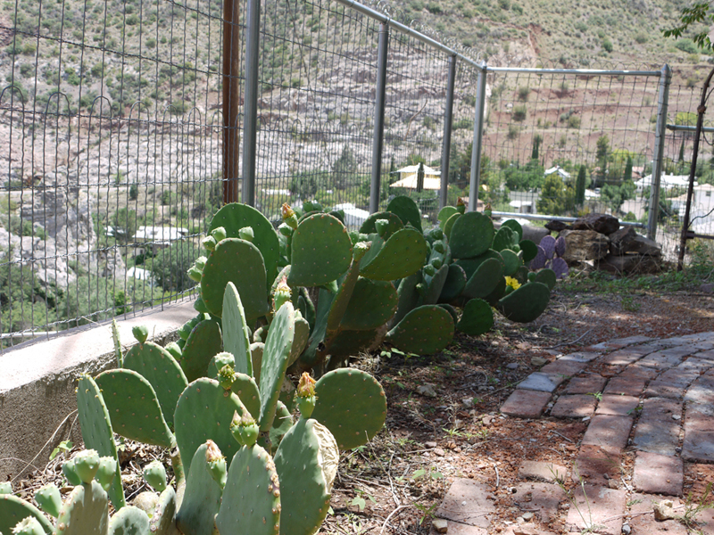

Welcome to Javelina Junction
129 High Road
Bisbee, AZ

Panoramic Views of the Mountains and Mexico. Walk to Town in Minutes.
Once a prosperous mining town, Bisbee became a vibrant artists'
community after the mine closed in the 1970s and artists moved in. Hilltop
House sits just a quick five minutes' walk from downtown Old Bisbee,
where you will find restaurants, art galleries, and a colorful
nightlife. Nearby are hiking, bird watching, historic towns, and Mexico.
A miner's cottage beautifully refurbished and furnished in Southwestern style, Hilltop
House features a fully equipped kitchen with gas range, and a TV and DVD player, and two lovely porches overlooking the town. From the house you can see down into Bisbee,
and across the high desert as far as the mountains of Mexico.
- Two bedrooms, 1½ bath
- 27" TV, Cable
- Wireless internet available
- Barbeque
- Washer & Dryer
- Off street parking
- Air conditioned
- Weekends from $250/Weekly from $650
- No pets, no smoking